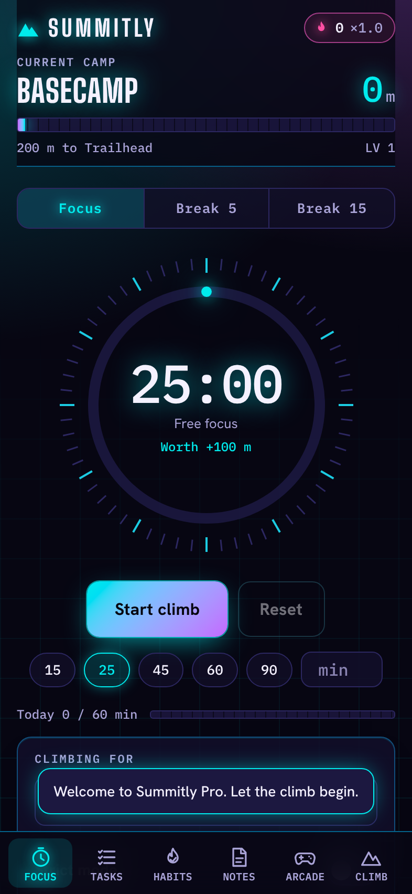

<!doctype html>
<html><head><meta charset="utf-8"><title>Phone Ate My Day</title>
<script src="kit/stick.js"></script>
<script src="kit/fourpanel.js"></script>
<style>
  #stage .talkcap { text-transform:none; font-family:HG, Arial, sans-serif; font-weight:600; letter-spacing:0; text-shadow:0 5px 0 rgba(0,0,0,.45) }
  #stage .talkcap > div { line-height:1.12 }
  .pov { position:absolute; left:0; top:0; width:1080px; height:1920px; pointer-events:none }
  .tp-phone { border-radius:64px; background:linear-gradient(150deg,#3a4256,#10131b 38%,#1b2030); box-shadow:0 0 0 3px rgba(62,230,255,.55), 0 0 0 10px rgba(62,230,255,.12) }
  .tp-phone .sc { position:absolute; overflow:hidden; background:#05070c; border-radius:44px 44px 10px 10px }
  .tp-phone .sc img { position:absolute; left:0; top:0; display:block; transform-origin:0 0 }
  .tp-phone .isl { position:absolute; height:30px; border-radius:16px; background:#000 }
  .tp-phone .back { position:absolute; left:0; top:0; right:0; bottom:0; border-radius:64px; background:linear-gradient(160deg,#2b3350,#141a2e 60%,#0d1120); opacity:0 }
  .tp-phone .cam { position:absolute; left:40px; top:40px; width:150px; height:150px; border-radius:40px; background:#0b0e1a; box-shadow:inset 0 0 0 4px rgba(255,255,255,.12) }
  .tp-phone .cam i { position:absolute; width:52px; height:52px; border-radius:50%; background:#05060c; box-shadow:inset 0 0 0 6px #252b44 }
  .tiny { font:400 34px PM; letter-spacing:.12em; color:#ffd7b8; white-space:nowrap; text-transform:lowercase }
</style>
</head>
<body><div id="stage"></div>
<script>
// TALK EXAMPLE — the cyan ninja (KAI in sound.json) and his friend (FRIEND: a regular stick guy in a hoodie + cap) talk;
// the friend lost his day to his phone, the ninja gives 3 tips we SEE. VO + word onsets come from timing.json (python3 talk-example/timing.py talk-example).
const S = Stick, F = FourPanel, { seg, oC, iC, ioC, io, oBack, lerp, clamp, tri, hash } = S;
const DUR = 39.6;
const SC_T = { A: 0, A2: 2.45, B1: 5.4, B2: 7.7, C: 9.45, D: 15.3, D2: 17.3, E: 20.65, Fd: 26.35, G: 28.6, H: 31.55, I: 33.95, J: 36.3 };
// the friend: a regular stick person (not a ninja): orange hoodie, blue cap, jeans
const FRIEND = Object.assign({}, S.ninja.PAL, { civ: 1, ink: '#e8703a', ink2: '#b5532a', rim: '#ffd0a8', skin: '#f3cfa8', cap: '#2f6bd8',
  leg: '#2e3f78', leg2: '#22305e', mouth: '#5a2a22' });
let TM = [];                                                      // timing.json: [{t, dur, who, words:[[w, t]], env:[30 fps]}]
const W_ = (i, j) => TM[i].words[Math.min(j, TM[i].words.length - 1)][1];
const LEND = i => TM[i].t + TM[i].dur;
function talk(who, t) {
  for (const L of TM) if (L.who === who && t >= L.t && t < L.t + L.dur) { const f = (t - L.t) * 30, i = Math.floor(f), a = L.env[i] || 0, b = L.env[i + 1] || 0; return lerp(a, b, f - i); }
  return 0;
}

const stage = S.stage();
const E = { bed: S.env(stage, 'bedroom'), bed2: S.env(stage, 'bedroom'), hall: S.env(stage, 'hall'), lib: S.env(stage, 'library', { day: 1 }),
  desk: S.env(stage, 'void', { bg: '#120d1c', glow: '#6a3a2a' }), mtn: S.env(stage, 'mountain'), end: S.env(stage, 'void', { bg: '#0b1026', glow: '#2a3f8a' }),
  pov: S.env(stage, 'bedroom') };
// screen-space shade over the set (not the characters) so captions always sit on a dark, calm band
const shade = document.createElement('div'); shade.className = 'abs full'; shade.dataset.bg = 'caption-shade';
shade.style.background = 'linear-gradient(to bottom, rgba(6,8,18,.55) 0px, rgba(6,8,18,.86) 220px, rgba(6,8,18,.86) 470px, rgba(6,8,18,0) 660px)';
stage.appendChild(shade);
const W = S.world(stage);

// ---------------------------------------------------------------- POV phone (real app screen) + big hands
const PX = 160, PY = 592, PW = 650, BZ = 26, SCW = PW - 2 * BZ, CROP_Y = 352, IS = SCW / 786, SCH = Math.round((1335 - CROP_Y) * IS);
const handsBack = S.canvas(stage);
const hbx = handsBack.getContext('2d');
const ph = document.createElement('div'); ph.className = 'abs tp-phone';
ph.setAttribute('style', `left:${PX}px;top:${PY}px;width:${PW}px;height:${SCH + BZ + 90}px;opacity:0`);
ph.innerHTML = `<div class="sc" style="left:${BZ}px;top:${BZ}px;width:${SCW}px;height:${SCH}px"></div>` +
  `<div class="isl" style="left:${PW / 2 - 55}px;top:${BZ + 12}px;width:110px"></div>` +
  `<div class="back"><div class="cam"><i style="left:18px;top:18px"></i><i style="left:80px;top:18px"></i><i style="left:18px;top:80px"></i></div></div>`;
ph.dataset.words = 'screenshot'; stage.appendChild(ph);
const phBack = ph.querySelector('.back'), phSc = ph.querySelector('.sc');
const handsFront = S.canvas(stage); const hfx = handsFront.getContext('2d');

// ---------------------------------------------------------------- captions (word by word, one key word per line; orange = the friend speaks, cyan = the ninja; sentence caseyan ninja)
const CAPDEF = [
  [0, '<div data-max="92">Okay, my phone literally</div><div data-max="92"><i class="or">ate</i> my whole day.</div>', [0, 1, 2, 3, 4, 5, 6, 7]],
  [1, '<div data-max="92">I opened it for</div><div data-max="92">one <i class="or">second…</i></div>', [0, 1, 2, 3, 4, 5]],
  [1, '<div data-max="92">now it’s</div><div data-max="120"><i class="or">2 AM.</i></div>', [6, 7, 8]],
  [2, '<div data-max="92">Wait. Didn’t you have</div><div data-max="92">a <i class="cy">workout</i> today?</div>', [0, 1, 2, 3, 4, 5, 6]],
  [3, '<div data-max="92">Yeah… it’s still</div><div data-max="92"><i class="or">waiting</i> for me.</div>', [0, 1, 2, 3, 4, 5]],
  [4, '<div data-max="92">Real question. Where</div><div data-max="92">does your phone <i class="cy">sleep?</i></div>', [0, 1, 2, 3, 4, 5, 6]],
  [5, '<div data-max="96">Uh… next to</div><div data-max="96">my <i class="or">face?</i></div>', [0, 1, 2, 3, 4]],
  [6, '<div data-max="96">Yeah, that’s</div><div data-max="96">the <i class="cy">problem.</i></div>', [0, 1, 2, 3]],
  [7, '<div data-max="92">Tonight, it sleeps</div><div data-max="92">in the <i class="cy">hallway.</i></div>', [0, 1, 2, 3, 4, 5]],
  [8, '<div data-max="100">Wait, the <i class="or">hall—</i></div>', [0, 1, 2]],
  [9, '<div data-max="110">The <i class="cy">hallway.</i></div>', [0, 1]],
  [10, '<div data-max="104">Man… that’s <i class="or">cold.</i></div>', [0, 1, 2]],
  [11, '<div data-max="92">When I need</div><div data-max="92">to <i class="cy">focus,</i></div>', [0, 1, 2, 3, 4]],
  [11, '<div data-max="92">I just start a</div><div data-max="92"><i class="cy">25-minute</i> timer.</div>', [5, 6, 7, 8, 9, 11]],
  [12, '<div data-max="100">Then <i class="cy">flip</i> it over.</div>', [0, 1, 2, 3]],
  [13, '<div data-max="92">25? Honestly…</div><div data-max="92">I can do <i class="or">that.</i></div>', [0, 1, 2, 3, 4, 5]],
  [14, '<div data-max="96">Then check</div><div data-max="96">it off</div>', [0, 1, 2, 3]],
  [14, '<div data-max="92">in your <i class="cy">planner.</i></div><div data-max="92">Every day.</div>', [4, 5, 6, 7, 8]],
  [15, '<div data-max="92">Bro, I did push-ups.</div><div data-max="92">Like, on <i class="or">purpose.</i></div>', [0, 1, 2, 3, 4, 5, 6]],
  [16, '<div data-max="92">Day 5… my phone</div><div data-max="92">thinks I <i class="or">moved out.</i></div>', [0, 1, 2, 3, 4, 5, 6]],
  [17, '<div data-max="92">Your turn. What app</div><div data-max="92">eats <i class="cy">your</i> day?</div>', [0, 1, 2, 3, 4, 5, 6]],
];
const CAPS = CAPDEF.map(([li, html, ix]) => { const el = S.kin(stage, html, { top: 270 }); el.classList.add('talkcap'); return { li, ix, el }; });
const tiny = S.kicker(stage, 'free habit tracker in bio', { top: 560 }); tiny.classList.remove('kick'); tiny.classList.add('tiny');
S.safeGuide(stage);

// ---------------------------------------------------------------- helpers
const D = S.ninja.draw;
// a character: who 'FRIEND' | 'KAI'; talking adds a mouth + a small head bob
function nin(t, who, J, o) {
  const k = talk(who, t);
  if (k > .02) { J = Object.assign({}, J); J.tilt = (J.tilt || 0) + .05 * k * Math.sin(t * 11) - .03 * k; J.hip = [J.hip[0], J.hip[1] - 4 * k]; }
  return S.ninja.pose(t, Object.assign({ J, talk: k, pal: who === 'FRIEND' ? FRIEND : null }, o));
}
const head = n => S.ninja.toWorld(n, S.ninja.skel(n).hc);
const hand = n => S.ninja.toWorld(n, S.ninja.skel(n).armF[2]);
function rr(ctx, x, y, w, h, r) { ctx.beginPath(); ctx.roundRect(x, y, w, h, r); }
function glowPhone(ctx, x, y, s, r, k, face) {                   // a phone prop; face: 'sad' draws a tiny sad face on its screen
  ctx.save(); ctx.translate(x, y); ctx.rotate(r); ctx.scale(s, s); ctx.lineCap = 'round'; ctx.lineJoin = 'round';
  if (k > 0) { ctx.globalAlpha = .25 * k; ctx.fillStyle = '#8fe9ff'; ctx.beginPath(); ctx.arc(0, 0, 70, 0, Math.PI * 2); ctx.fill(); ctx.globalAlpha = 1; }
  ctx.fillStyle = '#0c0e18'; rr(ctx, -28, -50, 56, 100, 12); ctx.fill(); ctx.strokeStyle = '#8a90b0'; ctx.lineWidth = 3; ctx.stroke();
  const g = ctx.createLinearGradient(0, -44, 0, 44); g.addColorStop(0, face === 'sad' ? '#3a4a7a' : `rgba(120,230,255,${.3 + .7 * k})`); g.addColorStop(1, face === 'sad' ? '#24294a' : `rgba(255,92,138,${.25 + .7 * k})`);
  ctx.fillStyle = g; rr(ctx, -22, -42, 44, 84, 7); ctx.fill();
  if (face === 'sad') {
    ctx.fillStyle = '#e8ecff'; [-9, 9].forEach(ex => { ctx.beginPath(); ctx.arc(ex, -8, 4, 0, Math.PI * 2); ctx.fill(); });
    ctx.strokeStyle = '#e8ecff'; ctx.lineWidth = 3.5; ctx.beginPath(); ctx.arc(0, 14, 9, Math.PI * 1.15, Math.PI * 1.85); ctx.stroke();
    ctx.fillStyle = '#7fd8ff'; ctx.beginPath(); ctx.ellipse(12, 2, 3, 5, 0, 0, Math.PI * 2); ctx.fill();
  }
  ctx.restore();
}
// big cartoon glove (ninja hand): palm + mitten fingers, cyan rim (pal.rim)
function glove(ctx, x, y, s, rot, o = {}) {
  const ink = o.ink || '#0d0f16', rim = o.rim || '#3ee6ff';
  ctx.save(); ctx.translate(x, y); ctx.rotate(rot); ctx.scale(s * (o.fx || 1), s); ctx.lineCap = 'round'; ctx.lineJoin = 'round';
  const parts = c => {
    c.forEach(([x0, y0, x1, y1, w]) => { ctx.lineWidth = w; ctx.beginPath(); ctx.moveTo(x0, y0); ctx.lineTo(x1, y1); ctx.stroke(); });
  };
  const fingers = o.fingers || [];
  ctx.strokeStyle = rim; ctx.fillStyle = rim;
  // outline pass
  ctx.save(); ctx.lineWidth = 0;
  if (o.arm) { ctx.lineWidth = 120 + 12; ctx.beginPath(); ctx.moveTo(o.arm[0], o.arm[1]); ctx.lineTo(0, 30); ctx.stroke(); }
  ctx.beginPath(); ctx.ellipse(0, 0, 86 + 6, 100 + 6, 0, 0, Math.PI * 2); ctx.fill();
  parts(fingers.map(f => [f[0], f[1], f[2], f[3], (f[4] || 50) + 12]));
  ctx.restore();
  ctx.strokeStyle = ink; ctx.fillStyle = ink;
  if (o.arm) { ctx.lineWidth = 120; ctx.beginPath(); ctx.moveTo(o.arm[0], o.arm[1]); ctx.lineTo(0, 30); ctx.stroke(); }
  ctx.beginPath(); ctx.ellipse(0, 0, 86, 100, 0, 0, Math.PI * 2); ctx.fill();
  parts(fingers.map(f => [f[0], f[1], f[2], f[3], f[4] || 50]));
  // knuckle creases
  ctx.strokeStyle = 'rgba(255,255,255,.10)'; ctx.lineWidth = 4;
  fingers.forEach(f => { ctx.beginPath(); ctx.moveTo(f[2] - (f[2] - f[0]) * .35, f[3] - (f[3] - f[1]) * .35 - 10); ctx.lineTo(f[2] - (f[2] - f[0]) * .35, f[3] - (f[3] - f[1]) * .35 + 10); ctx.stroke(); });
  if (o.pen) {                                                    // pen in the hand, tip at o.pen (local)
    ctx.strokeStyle = '#eef1ff'; ctx.lineWidth = 20; ctx.beginPath(); ctx.moveTo(o.pen[0] + 150, o.pen[1] + 160); ctx.lineTo(o.pen[0] + 18, o.pen[1] + 20); ctx.stroke();   // stylus
    ctx.strokeStyle = '#8a90b0'; ctx.lineWidth = 9; ctx.beginPath(); ctx.moveTo(o.pen[0] + 18, o.pen[1] + 20); ctx.lineTo(o.pen[0], o.pen[1]); ctx.stroke();
  }
  ctx.restore();
}
// DIGITAL planner on a tablet (iPad-style, portrait): bezel, planner page with side tabs, habit grid; x,y = tablet top-left,
// w = tablet width (world px). checks: fn(row, col) -> 0..1 (a tapped check pops in)
function tablet(ctx, x, y, w, checks, o = {}) {
  const s = w / 884;
  ctx.save(); ctx.translate(x, y); ctx.rotate(o.rot || 0); ctx.scale(s, s); ctx.lineCap = 'round'; ctx.lineJoin = 'round';
  ctx.fillStyle = 'rgba(0,0,0,.4)'; rr(ctx, 16, 26, 884, 931, 60); ctx.fill();
  ctx.fillStyle = '#161a2c'; rr(ctx, 0, 0, 884, 931, 60); ctx.fill();
  ctx.strokeStyle = '#4a5578'; ctx.lineWidth = 5; rr(ctx, 2, 2, 880, 927, 58); ctx.stroke();
  ctx.fillStyle = '#05060c'; ctx.beginPath(); ctx.arc(442, 20, 6, 0, Math.PI * 2); ctx.fill();
  ctx.save(); ctx.translate(40, 40);
  ctx.fillStyle = '#eceaf4'; rr(ctx, 0, 0, 804, 851, 14); ctx.fill();                     // app background
  ctx.fillStyle = '#d9d6e6'; ctx.fillRect(0, 0, 804, 44);                                  // app toolbar
  ctx.fillStyle = '#9a96b0'; [30, 70, 110, 690, 730, 770].forEach(cx => { ctx.beginPath(); ctx.arc(cx, 22, 9, 0, Math.PI * 2); ctx.fill(); });
  ctx.save(); ctx.translate(0, 44);
  ctx.fillStyle = '#ffffff'; rr(ctx, 14, 14, 730, 779, 8); ctx.fill();                    // planner page
  const tabs = ['#ff9eb5', '#ffc98a', '#ffe58a', '#9fe3b8', '#9fd2ff', '#c3adff'];          // planner side tabs
  tabs.forEach((c, i) => { ctx.fillStyle = c; rr(ctx, 744, 40 + i * 118, 50, 100, [0, 12, 12, 0]); ctx.fill(); });
  ctx.fillStyle = '#c3adff'; rr(ctx, 14, 14, 730, 110, [8, 8, 0, 0]); ctx.fill();
  ctx.fillStyle = '#2a2145'; ctx.font = '800 78px BS'; ctx.textAlign = 'center'; ctx.textBaseline = 'middle'; ctx.fillText('HABIT TRACKER', 379, 72);
  const days = ['M', 'T', 'W', 'T', 'F', 'S', 'S'], gx = 170, cw = 80, gy = 210, rh = 140;
  ctx.font = '600 42px HG'; ctx.fillStyle = '#6a6488'; days.forEach((d, i) => ctx.fillText(d, gx + cw * i + cw / 2, gy - 36));
  for (let r = 0; r < 3; r++) {
    const cy = gy + r * rh + rh / 2;
    ctx.save(); ctx.translate(92, cy); ctx.strokeStyle = '#4a3f75'; ctx.fillStyle = '#4a3f75'; ctx.lineWidth = 10;
    if (r === 0) { ctx.beginPath(); ctx.moveTo(-34, 0); ctx.lineTo(34, 0); ctx.stroke(); rr(ctx, -50, -26, 18, 52, 5); ctx.fill(); rr(ctx, 32, -26, 18, 52, 5); ctx.fill(); }
    else if (r === 1) { ctx.beginPath(); ctx.moveTo(0, -24); ctx.lineTo(-38, -32); ctx.lineTo(-38, 30); ctx.lineTo(0, 38); ctx.lineTo(38, 30); ctx.lineTo(38, -32); ctx.closePath(); ctx.stroke(); ctx.beginPath(); ctx.moveTo(0, -24); ctx.lineTo(0, 38); ctx.stroke(); }
    else { rr(ctx, -20, -34, 40, 68, 8); ctx.stroke(); ctx.beginPath(); ctx.moveTo(-40, 44); ctx.lineTo(40, -44); ctx.strokeStyle = '#e0465f'; ctx.stroke(); }
    ctx.restore();
    for (let c = 0; c < 7; c++) {
      const cx = gx + cw * c + cw / 2, cyy = gy + r * rh + rh / 2;
      ctx.fillStyle = '#f1eff8'; rr(ctx, cx - 30, cyy - 40, 60, 80, 12); ctx.fill();
      const k = checks(r, c);
      if (k > 0) {                                                // tapped: a green tile pops in with a white check
        const e = oBack(k, 2.4);
        ctx.save(); ctx.translate(cx, cyy); ctx.scale(e, e);
        ctx.fillStyle = '#2ed27a'; rr(ctx, -30, -40, 60, 80, 12); ctx.fill();
        ctx.strokeStyle = '#ffffff'; ctx.lineWidth = 10; ctx.beginPath(); ctx.moveTo(-15, 0); ctx.lineTo(-4, 13); ctx.lineTo(17, -14); ctx.stroke();
        ctx.restore();
        if (k < .7) { ctx.save(); ctx.globalAlpha = .6 * (1 - k / .7); ctx.strokeStyle = '#2ed27a'; ctx.lineWidth = 6; ctx.beginPath(); ctx.arc(cx, cyy, 30 + 50 * k, 0, Math.PI * 2); ctx.stroke(); ctx.restore(); }
      }
    }
  }
  ctx.strokeStyle = '#e4e1ee'; ctx.lineWidth = 3; for (let l = 0; l < 3; l++) { ctx.beginPath(); ctx.moveTo(60, 680 + l * 36); ctx.lineTo(700, 680 + l * 36); ctx.stroke(); }
  ctx.restore(); ctx.restore(); ctx.restore();
  return { cell: (r, c) => [x + (40 + 170 + 80 * c + 40) * s, y + (40 + 44 + 210 + 140 * r + 70) * s], s };
}
function dust(ctx, t, x, y, k) {
  if (k <= 0) return;
  for (let i = 0; i < 6; i++) { const p = (t * .35 + hash(i * 3.1)) % 1; ctx.save(); ctx.globalAlpha = k * .5 * Math.sin(Math.PI * p); ctx.fillStyle = '#c9c3e8';
    ctx.beginPath(); ctx.arc(x + (hash(i * 7.7) - .5) * 160 + 20 * Math.sin(t + i), y - 40 - 90 * p, 4 + 3 * hash(i), 0, Math.PI * 2); ctx.fill(); ctx.restore(); }
}
function web(ctx, x, y, s) {                                      // corner cobweb
  ctx.save(); ctx.translate(x, y); ctx.scale(s, s); ctx.strokeStyle = 'rgba(220,225,255,.45)'; ctx.lineWidth = 2.5;
  for (let i = 0; i < 5; i++) { const a = i / 4 * Math.PI / 2; ctx.beginPath(); ctx.moveTo(0, 0); ctx.lineTo(120 * Math.cos(a), 120 * Math.sin(a)); ctx.stroke(); }
  for (let r = 1; r <= 3; r++) { ctx.beginPath(); for (let i = 0; i < 5; i++) { const a = i / 4 * Math.PI / 2, rr2 = r * 34; ctx[i ? 'lineTo' : 'moveTo'](rr2 * Math.cos(a), rr2 * Math.sin(a)); } ctx.stroke(); }
  ctx.restore();
}
function eyes(ctx, x, y, s, t, look) {                            // two cartoon eyes (the dumbbell watching)
  ctx.save(); ctx.translate(x, y); ctx.scale(s, s);
  const bl = (t % 2.9) > 2.78 ? .15 : 1;
  [-16, 16].forEach(ex => { ctx.fillStyle = '#fff'; ctx.beginPath(); ctx.ellipse(ex, 0, 13, 15 * bl, 0, 0, Math.PI * 2); ctx.fill();
    ctx.fillStyle = '#0d0f16'; ctx.beginPath(); ctx.arc(ex + look[0] * 5, look[1] * 5, 6 * bl, 0, Math.PI * 2); ctx.fill(); });
  ctx.fillStyle = '#0d0f16'; ctx.save(); ctx.translate(-16, -20); ctx.rotate(.25); ctx.fillRect(-12, -3, 24, 6); ctx.restore(); ctx.save(); ctx.translate(16, -20); ctx.rotate(-.25); ctx.fillRect(-12, -3, 24, 6); ctx.restore();
  ctx.restore();
}
function bigDumbbell(ctx, x, y, s) {
  ctx.save(); ctx.translate(x, y); ctx.scale(s, s);
  ctx.fillStyle = 'rgba(0,0,0,.35)'; ctx.beginPath(); ctx.ellipse(0, 4, 120, 14, 0, 0, Math.PI * 2); ctx.fill();
  ctx.fillStyle = '#9aa0bf'; ctx.fillRect(-70, -40, 140, 16);
  ctx.fillStyle = '#3a3f5c'; [-1, 1].forEach(sx => { rr(ctx, sx > 0 ? 60 : -100, -84, 40, 88, 10); ctx.fill(); rr(ctx, sx > 0 ? 96 : -120, -70, 24, 60, 8); ctx.fill(); });
  ctx.restore();
}
function sparkleBurst(ctx, t, t0, x, y, col) { S.sparks(ctx, t, t0, x, y, { n: 10, seed: Math.round(t0 * 10), speed: 420, life: .4, g: 700, cols: [col || '#ffd34d', '#ffffff'] }); }

// ---------------------------------------------------------------- word / beat times used by the action (filled once timing.json is loaded)
let T = {};
function setT() {
  T = {
    now: W_(1, 6), two: W_(1, 8), wk: W_(2, 5), wait: W_(3, 3), sleep: W_(4, 6), uh: W_(5, 0), face: W_(5, 4), prob0: W_(6, 0),
    put: W_(7, 5), hall: W_(8, 0), hw: W_(9, 0), man: W_(10, 0), cold: W_(10, 2),
    min25: W_(11, 9), timer: W_(11, 11), flip: W_(12, 1),
    tf1: W_(13, 0), hon: W_(13, 1), tf2: W_(13, 3), check: W_(14, 1), paper: W_(14, 6), every: W_(14, 7), day: W_(14, 8),
    push: W_(15, 3), purpose: W_(15, 6), day5: W_(16, 0), moved: W_(16, 6), turn: W_(17, 1), your: W_(17, 5),
  };
}

// ---------------------------------------------------------------- scenes
const STOOL = 475;
const tlA = S.ninja.timeline([[-1, 'scroll', { swipes: [1.3, 2.2, 3.1, 3.6, 4.0, 4.4, 5.2, 6.0, 6.8, 7.4] }]]);
const SC = [
  // A: 2 AM, the hook two-shot (frame 0 = thumbnail): the friend scrolling on the stool, the ninja hands on hips
  { a: 0, b: SC_T.A2, env: E.bed, cam: t => ({ x: 630, y: 1195, z: 1.9 - .06 * seg(t, 0, SC_T.A2) }), envOpt: () => ({ lamp: .55 }),
    draw(ctx, t) {
      D(ctx, nin(t, 'FRIEND', tlA(t), { x: STOOL, y: 1500, s: 1.08, glow: 1, face: 'w' }));
      D(ctx, nin(t, 'KAI', S.ninja.POSE.proud(t), { x: 790, y: 1500, s: 1.08, fx: -1, face: 'n', front: 0, look: [-3, 0] }));
      F.notif(ctx, 450, 1090, ((t + .4) % 1.6) / 1.2, '#ff5a8a', 1.1);
    } },
  // A2: close-up — "I opened it for one second… now it's 2 AM." (clock spins from 6 to 2, alarm shake)
  { a: SC_T.A2, b: SC_T.B1, env: E.bed, whip: 'cut', cam: t => ({ x: lerp(410, 380, seg(t, SC_T.A2, SC_T.B1)), y: 1100, z: lerp(1.8, 1.9, io(seg(t, SC_T.A2, SC_T.B1))) + .08 * tri(t, T.two, T.two + .35) }),
    envOpt: () => ({ lamp: .4 }),
    draw(ctx, t) {
      const m = T.now - .1, hrs = t < m ? 6 + 2 * seg(t, SC_T.A2, m) : 8 + 6 * iC(seg(t, m, T.two));
      F.clock(ctx, 270, 950, .92, hrs, tri(t, T.two, T.two + .9), t);
      const shocked = t > T.two - .05;
      const g = nin(t, 'FRIEND', tlA(t), { x: STOOL, y: 1500, s: 1.08, glow: 1, face: shocked ? 's' : (t < m ? 'n' : 'g'), look: t > m ? [-6, -4] : [0, 0] });
      D(ctx, g);
      if (shocked) F.sweat(ctx, head(g), t, 1, 0, 1.2);
    } },
  // B1: "Wait. Didn't you have a workout today?" — the ninja points at the dusty dumbbell (it has eyes)
  { a: SC_T.B1, b: SC_T.B2, env: E.bed, whip: 'cut', cam: t => ({ x: lerp(470, 440, seg(t, SC_T.B1, SC_T.B2)), y: 1250, z: 1.8 }), envOpt: () => ({ lamp: .4 }),
    draw(ctx, t) {
      bigDumbbell(ctx, 300, 1492, 1.5); web(ctx, 160, 1380, .6); dust(ctx, t, 300, 1470, 1);
      eyes(ctx, 300, 1410, 1.5, t, t < T.wk ? [0, 0] : [1, -.6]);
      D(ctx, nin(t, 'KAI', S.ninja.timeline([[SC_T.B1, 'idle'], [T.wk - .5, 'point', { ang: 34, face: 'n' }, .25]])(t), { x: 650, y: 1500, s: 1.05, fx: -1 }));
    } },
  // B2: "Yeah… it's still waiting for me." — the friend sheepish, the dumbbell stares at him
  { a: SC_T.B2, b: SC_T.C, env: E.bed, whip: 'cut', cam: t => ({ x: lerp(400, 440, seg(t, SC_T.B2, SC_T.C)), y: 1200, z: lerp(1.85, 1.95, seg(t, SC_T.B2, SC_T.C)) }), envOpt: () => ({ lamp: .5 }),
    draw(ctx, t) {
      const g = nin(t, 'FRIEND', S.ninja.timeline([[SC_T.B2, 'scroll', { swipes: [.2] }], [T.wait - .2, 'shrug', {}, .25]])(t), { x: STOOL + 40, y: 1500, s: 1.08, glow: 1, face: 'w' });
      bigDumbbell(ctx, 250, 1495, 1.1); eyes(ctx, 250, 1430, 1.15, t, [1, -.8]);
      D(ctx, g);
    } },
  // C: bed — "Real question. Where does your phone sleep?" / "Uh… next to my face?" / "Yeah, that's the problem."
  { a: SC_T.C, b: SC_T.D, env: E.bed2, whip: 'left', cam: t => {
      const close = io(seg(t, T.uh - .25, T.uh)) * (1 - io(seg(t, T.prob0 - .2, T.prob0 + .05)));       // cut in on the friend's answer
      return { x: lerp(lerp(310, 330, seg(t, SC_T.C, SC_T.D)), 240, close), y: lerp(1270, 1300, close), z: lerp(1.8, 2.3, close) + .06 * tri(t, T.face, T.face + .35) }; },
    envOpt: () => ({ lamp: 0 }),
    draw(ctx, t) {
      const BX = 390;                                             // bed mirrored: headboard on the right, pillow at x 260..403
      ctx.save(); ctx.translate(BX, 0); ctx.scale(-1, 1); F.bed(ctx, 0, 1500, 1.3, '#4b3f9a'); ctx.restore();
      const g = nin(t, 'FRIEND', S.ninja.POSE.look(t), { x: BX - 420, y: 1372, s: .9, r: 90, fx: -1, shadow: 0, face: t > T.face - .3 ? 'w' : 'g', look: [4, 0] });
      D(ctx, g);
      ctx.save(); ctx.translate(BX, 0); ctx.scale(-1, 1); F.blanket(ctx, 0, 1500, 1.3, '#4b3f9a', 1); ctx.restore();
      const buzzK = Math.max(tri(t, SC_T.C + .5, SC_T.C + 1.2), tri(t, T.sleep - .3, T.sleep + .4), tri(t, T.face - .1, T.face + .7));
      const j = buzzK > 0 ? Math.round(Math.sin(t * 80) * 3 * buzzK) : 0;
      glowPhone(ctx, BX + 6 + j, 1318, .7, .25, .5 + .5 * buzzK);
      F.buzz(ctx, BX + 6, 1318, t, buzzK, 1);
      if (buzzK > .2) F.notif(ctx, BX - 30, 1230, seg(t, T.sleep - .3, T.sleep + .7), '#ff5a8a', 1.1);
      const kt = S.ninja.timeline([[SC_T.C, 'idle'], [SC_T.C + .3, 'point', { ang: 40, face: 'n' }, .25], [T.face + .15, 'facepalm', {}, .2], [T.prob0 + .1, 'point', { ang: 30, face: 'd' }, .25]])(t);
      D(ctx, nin(t, 'KAI', kt, { x: 530, y: 1500, s: 1.02, fx: -1 }));
    } },
  // D: hall — "Tonight, it sleeps in the hallway." the ninja carries the phone out and plugs it in
  { a: SC_T.D, b: SC_T.D2, env: E.hall, whip: 'right', cam: t => ({ x: lerp(560, 660, seg(t, SC_T.D, SC_T.D2)), y: 1230, z: 1.6 + .05 * tri(t, T.put, T.put + .35) }),
    draw(ctx, t) {
      const put = T.put - .05;
      const tr = S.track([[SC_T.D, 300, 1500, 1.05, 0], [put - .3, 600, 1500, 1.05, 0], [99, 600, 1500, 1.05, 0]])(t);
      const J = S.ninja.timeline([[SC_T.D, 'carry', { face: 'd' }], [put - .3, 'reach', { x: 150, y: -210, face: 'd' }, .2], [put + .45, 'proud', {}, .25]])(t);
      const k = nin(t, 'KAI', J, Object.assign({ vx: tr.vx }, tr));
      const hd = hand(k);
      ctx.strokeStyle = '#e8ecff'; ctx.lineWidth = 5; ctx.lineCap = 'round'; ctx.beginPath(); ctx.moveTo(940, 1260); ctx.quadraticCurveTo(880, 1330, 800, 1244); ctx.stroke();
      D(ctx, k);
      if (t >= put) { glowPhone(ctx, 790, 1196, .9, 0, .4); if (t < put + .5) sparkleBurst(ctx, t, put, 790, 1180, '#3ee6ff'); }
      else glowPhone(ctx, hd[0] + 6, hd[1] - 40, .9, -.15, .4);
    } },
  // D2: the friend runs in — "Wait, the hall—" / "The hallway." / "Man… that's cold."
  { a: SC_T.D2, b: SC_T.E, env: E.hall, whip: 'cut', cam: t => { const c = io(seg(t, T.hw - .1, T.hw + .1)) * (1 - io(seg(t, T.man - .15, T.man + .05)));
      return { x: lerp(lerp(560, 530, seg(t, SC_T.D2, SC_T.E)), 660, c), y: lerp(1230, 1200, c), z: lerp(1.62, 2.1, c) + .05 * tri(t, T.cold, T.cold + .3) }; },
    draw(ctx, t) {
      glowPhone(ctx, 790, 1196, .9, 0, .4);
      const tr = S.track([[SC_T.D2, 120, 1500, 1.05, 0], [SC_T.D2 + .4, 420, 1500, 1.05, 60], [99, 420, 1500, 1.05, 0]])(t);
      const J = S.ninja.timeline([[SC_T.D2, 'run'], [SC_T.D2 + .4, 'reachUp', { x: 190, y: -330, face: 'w' }, .15], [T.hw + .3, 'shrug', {}, .25], [T.cold - .1, 'slump', {}, .25]])(t);
      const g = nin(t, 'FRIEND', J, Object.assign({ vx: tr.vx, ground: 1500 }, tr));
      D(ctx, g);
      const k = nin(t, 'KAI', S.ninja.timeline([[SC_T.D2, 'proud'], [T.hw - .15, 'point', { ang: -5, face: 'd' }, .2], [T.man, 'proud', {}, .3]])(t), { x: 690, y: 1500, s: 1.05, fx: -1 });
      D(ctx, k);
    } },
  // E: POV — the ninja's hands: real focus timer, tap, flip it over
  { a: SC_T.E, b: SC_T.Fd, env: E.pov, whip: 'up', cam: t => ({ x: 800, y: lerp(1180, 1160, seg(t, SC_T.E, SC_T.Fd)), z: 2.0 }), envOpt: () => ({ lamp: 1 }),
    draw(ctx, t) { S.laptop(ctx, 780, 1262, 1, { on: true, lines: 5 }); } },
  // F: library — "Twenty-five? Honestly… I can do that." the friend works, phone face-down, timer ring
  { a: SC_T.Fd, b: SC_T.G, env: E.lib, whip: 'left', cam: t => ({ x: lerp(700, 730, seg(t, SC_T.Fd, SC_T.G)), y: 1250, z: lerp(1.65, 1.75, io(seg(t, SC_T.Fd, SC_T.G))) }),
    draw(ctx, t) {
      ctx.fillStyle = '#3a2440'; ctx.fillRect(560, 1262, 470, 22); ctx.fillStyle = '#24162c'; ctx.fillRect(590, 1284, 18, 216); ctx.fillRect(990, 1284, 18, 216);
      ctx.fillRect(560, 1400, 150, 16); ctx.fillRect(574, 1416, 14, 84); ctx.fillRect(682, 1416, 14, 84);
      S.timer(ctx, 760, 1110, .42, 1 - .25 * seg(t, T.tf2, SC_T.G));
      S.laptop(ctx, 850, 1262, 1, { on: true, lines: 2 + 5 * seg(t, T.tf2, SC_T.G) });
      ctx.fillStyle = '#1b2032'; rr(ctx, 930, 1250, 70, 12, 4); ctx.fill(); ctx.strokeStyle = '#3ee6ff'; ctx.lineWidth = 2; ctx.stroke();   // phone face-down
      const J = S.ninja.timeline([[SC_T.Fd, 'sitBack', {}], [T.tf2 - .15, 'type', { face: 'd', dx: 130, dy: -236 }, .25]])(t);
      D(ctx, nin(t, 'FRIEND', J, { x: 625, y: 1500, s: 1, face: t < T.hon ? 's' : t < T.tf2 - .15 ? 'n' : 'd' }));
      if (t > T.tf2) for (let i = 0; i < 3; i++) { const p = ((t - T.tf2) * .9 + i / 3) % 1; ctx.save(); ctx.globalAlpha = (1 - p) * .5 * seg(t, T.tf2, T.tf2 + .3); ctx.strokeStyle = '#3ee6ff'; ctx.lineWidth = 5; ctx.beginPath(); ctx.ellipse(850, 1190, 80 + 200 * p, 50 + 110 * p, 0, 0, Math.PI * 2); ctx.stroke(); ctx.restore(); }
    } },
  // G: the digital planner on a tablet — the ninja taps checks in with a stylus, on the beats
  { a: SC_T.G, b: SC_T.H, env: E.desk, whip: 'up', cam: t => ({ x: 540, y: 960 + 10 * seg(t, SC_T.G, SC_T.H), z: 1 + .04 * io(seg(t, SC_T.G, SC_T.H)) }),
    draw(ctx, t) {
      ctx.fillStyle = '#4a3020'; ctx.fillRect(-200, 560, 1480, 1500); ctx.fillStyle = 'rgba(255,200,140,.06)'; for (let i = 0; i < 9; i++) ctx.fillRect(-200, 600 + i * 150, 1480, 6);
      const CH = checkTimes();
      const tk = tablet(ctx, 150, 600, 780, (r, c) => { const ct = CH[r * 7 + c]; return ct == null ? 0 : seg(t, ct, ct + .3); }, { rot: -.015 });
      let target = tk.cell(0, 0);
      for (let i = 0; i < CH.length; i++) { if (CH[i] == null) continue; if (t >= CH[i] - .25) target = tk.cell(Math.floor(i / 7), i % 7); }
      let nxt = -1, best = 1e9; CH.forEach((c, i) => { if (c != null && c - .25 > t && c < best) { best = c; nxt = i; } });
      let hp = target;
      if (nxt >= 0) { const nc = tk.cell(Math.floor(nxt / 7), nxt % 7), k = io(seg(t, CH[nxt] - .5, CH[nxt] - .25)); hp = [lerp(target[0], nc[0], k), lerp(target[1], nc[1], k) - 30 * Math.sin(Math.PI * k)]; }
      const intro = 1 - oC(seg(t, SC_T.G, SC_T.G + .35));
      let dip = 0; CH.forEach(c => { if (c != null) dip = Math.max(dip, tri(t, c - .12, c + .1)); });
      const pen = [hp[0] + 6 + 14 * (1 - dip) + 300 * intro, hp[1] + 6 + 22 * (1 - dip) + 500 * intro];
      glove(ctx, pen[0] + 150, pen[1] + 170, .95, -.5, { pen: [-150, -170], fingers: [[-40, -60, -120, -130, 52], [0, -70, -60, -150, 50]], arm: [380, 700] });
    } },
  // H: dawn — "Bro, I did push-ups. Like, on purpose."
  { a: SC_T.H, b: SC_T.I, env: E.mtn, whip: 'right', cam: t => ({ x: 590, y: 1240, z: lerp(1.55, 1.65, io(seg(t, SC_T.H, SC_T.I))) + .05 * tri(t, T.purpose, T.purpose + .3) }),
    envOpt: t => ({ rise: .3 + .5 * io(seg(t, SC_T.H, SC_T.I)) }),
    draw(ctx, t) {
      const g = nin(t, 'FRIEND', S.ninja.timeline([[SC_T.H, 'pushup', { face: 'd' }], [T.purpose - .2, 'pump', {}, .25]])(t), { x: 540, y: 1500, s: 1.05 });
      D(ctx, g);
      if (t > T.purpose) sparkleBurst(ctx, t, T.purpose, head(g)[0], head(g)[1] - 60, '#ffb36b');
      D(ctx, nin(t, 'KAI', S.ninja.timeline([[SC_T.H, 'idle'], [T.purpose, 'cheer', {}, .2]])(t), { x: 830, y: 1500, s: .95, fx: -1, face: 'h' }));
    } },
  // I: hall — "Day five… my phone thinks I moved out." lonely phone, cobweb, the friend waves from the door
  { a: SC_T.I, b: SC_T.J, env: E.hall, whip: 'left', cam: t => ({ x: lerp(630, 610, seg(t, SC_T.I, SC_T.J)), y: 1220, z: lerp(1.5, 1.6, io(seg(t, SC_T.I, SC_T.J))) }),
    draw(ctx, t) {
      ctx.strokeStyle = '#e8ecff'; ctx.lineWidth = 5; ctx.lineCap = 'round'; ctx.beginPath(); ctx.moveTo(950, 1260); ctx.quadraticCurveTo(880, 1330, 820, 1244); ctx.stroke();
      tablet(ctx, 590, 1060, 180, (r, c) => (r === 0 && c < 5 ? seg(t, SC_T.I + .15 + c * .14, SC_T.I + .45 + c * .14) : 0), { rot: -.03 });   // the planner, 5 days checked
      glowPhone(ctx, 830, 1180, 1.25, 0, .2, 'sad');
      web(ctx, 950, 1060, .7);
      D(ctx, nin(t, 'FRIEND', S.ninja.timeline([[SC_T.I, 'idle'], [SC_T.I + .5, 'wave', {}, .2]])(t), { x: 390, y: 1500, s: 1.05, face: 'h' }));
    } },
  // J: both to camera — "Your turn. What app eats your day?"
  { a: SC_T.J, b: DUR + 1, env: E.end, whip: 'up', cam: t => ({ x: 550, y: 1220, z: lerp(1.6, 1.7, io(seg(t, SC_T.J, DUR))) + .04 * tri(t, T.your, T.your + .3) }),
    draw(ctx, t) {
      D(ctx, nin(t, 'KAI', S.ninja.timeline([[SC_T.J, 'look'], [T.your - .1, 'pump', {}, .2]])(t), { x: 380, y: 1500, s: 1.05 }));
      D(ctx, nin(t, 'FRIEND', S.ninja.timeline([[SC_T.J, 'look'], [T.turn + .3, 'shrug', {}, .25]])(t), { x: 720, y: 1500, s: 1.05, fx: -1 }));
    } },
];
function checkTimes() {                                         // row-major 3x7: when each check is drawn
  const A = new Array(21).fill(null);
  [T.check, T.check + .2, T.paper, T.paper + .2, T.every, T.day, T.day + .2].forEach((v, i) => A[i] = v);
  [T.paper + .45, T.every + .2, T.day + .35, T.day + .55].forEach((v, i) => A[7 + i] = v);
  [T.every + .35, T.day + .45, T.day + .65].forEach((v, i) => A[14 + i] = v);
  return A;
}

// ---------------------------------------------------------------- POV layer (phone + hands), stage coords
function pov(t) {
  const a = SC_T.E, b = SC_T.Fd;
  const on = t >= a - .2 && t < b + .1;
  if (!on) { ph.style.opacity = '0'; S.clear(hbx); S.clear(hfx); return; }
  const rise = oBack(seg(t, a + .05, a + .5), 1.2), flipK = io(seg(t, T.flip - .05, T.flip + .35)), drop = iC(seg(t, T.flip + .55, b - .05));
  const tap = tri(t, T.timer - .05, T.timer + .25);
  const dy = Math.round(900 * (1 - rise) + 8 * tap - 60 * Math.sin(Math.PI * flipK) + 1100 * drop + 6 * Math.sin(t * 2.2));
  const sx = Math.abs(Math.cos(Math.PI * flipK));
  ph.style.opacity = (seg(t, a, a + .1)).toFixed(3);
  ph.style.transform = `translate(0px,${dy}px) scale(${Math.max(.02, sx).toFixed(3)},1)`;
  phBack.style.opacity = flipK > .5 ? '1' : '0';
  phSc.style.visibility = flipK > .5 ? 'hidden' : 'visible';
  // hands: palms + arms behind the phone, fingers / thumb in front on the bezel (clipped off the screen)
  S.clear(hbx); S.clear(hfx);
  const release = io(seg(t, T.flip - .25, T.flip));                // hands let go before the flip
  const top = PY + dy, H = SCH + BZ + 90;
  const Lp = [PX - 6 - 160 * release, top + H * .66 + 900 * release], Rp = [PX + PW + 6 + 160 * release, top + H * .8 + 900 * release];
  const ink = '#0d0f16', rim = '#3ee6ff';
  const cap = (c, x0, y0, x1, y1, w, col) => { c.strokeStyle = col; c.lineWidth = w; c.lineCap = 'round'; c.beginPath(); c.moveTo(x0, y0); c.lineTo(x1, y1); c.stroke(); };
  const ell = (c, x, y, rx, ry, r, col) => { c.fillStyle = col; c.beginPath(); c.ellipse(x, y, rx, ry, r, 0, Math.PI * 2); c.fill(); };
  [[rim, 12], [ink, 0]].forEach(([col, o]) => {
    cap(hbx, Lp[0] - 40, Lp[1] + 60, Lp[0] - 230, 2100, 130 + o, col); ell(hbx, Lp[0], Lp[1], 100 + o / 2, 118 + o / 2, .2, col);
    cap(hbx, Rp[0] + 40, Rp[1] + 60, Rp[0] + 230, 2100, 130 + o, col); ell(hbx, Rp[0], Rp[1], 100 + o / 2, 118 + o / 2, -.2, col);
  });
  hfx.save(); hfx.beginPath(); hfx.rect(0, 0, 1080, 1920); const sl = PX + BZ - 1, st = top + BZ - 1; hfx.rect(sl + SCW + 2, st, -(SCW + 2), SCH + 2); hfx.clip('evenodd');
  if (sx > .9) {
    hfx.globalAlpha = 1 - release;
    const FL = [0, 1, 2, 3].map(i => [PX - 70 + 6 * Math.abs(i - 1.5), Lp[1] - 150 + i * 60, PX + 12, Lp[1] - 154 + i * 60 + 4, i === 3 ? 46 : 54]);
    const lift = 70 * tri(t, T.timer - .35, T.timer - .05) - 10 * tri(t, T.timer - .05, T.timer + .2);
    const TH = [PX + PW + 70, Rp[1] - 30, PX + PW - 8 - lift * .4, Rp[1] - 175 - lift, 56];
    [[rim, 12], [ink, 0]].forEach(([col, o]) => { FL.forEach(f => cap(hfx, f[0], f[1], f[2], f[3], f[4] + o, col)); cap(hfx, TH[0], TH[1], TH[2], TH[3], TH[4] + o, col); });
    hfx.strokeStyle = 'rgba(62,230,255,.35)'; hfx.lineWidth = 3;          // finger separations
    FL.slice(1).forEach(f => { hfx.beginPath(); hfx.moveTo(f[0] + 8, f[1] - 28); hfx.lineTo(f[2] - 8, f[3] - 28); hfx.stroke(); });
    hfx.fillStyle = 'rgba(255,255,255,.18)'; FL.forEach(f => { hfx.beginPath(); hfx.ellipse(f[2] - 2, f[3] - 8, 8, 5, 0, 0, Math.PI * 2); hfx.fill(); });   // nail shine
  }
  hfx.restore();
  // tap pulse ring around the phone (outside the screen)
  if (tap > 0) { hbx.save(); hbx.globalAlpha = .7 * tap; hbx.strokeStyle = '#3ee6ff'; hbx.lineWidth = 8; rr(hbx, PX - 40 * (1 - tap) - 14, top - 40 * (1 - tap) - 14, PW + 80 * (1 - tap) + 28, H + 80 * (1 - tap) + 28, 74); hbx.stroke(); hbx.restore(); }
}

// ---------------------------------------------------------------- seek
function seek(t) {
  if (!TM.length) return;
  const j = (a, d, amp) => t >= a && t < a + d ? [Math.round(amp * (1 - (t - a) / d) * Math.sin(t * 97)), Math.round(amp * (1 - (t - a) / d) * Math.cos(t * 83))] : [0, 0];
  const s1 = j(T.two, .3, 9), s2 = j(T.cold, .2, 5), s3 = j(T.purpose, .2, 6);
  W.seek(t, SC, { shake: [s1[0] + s2[0] + s3[0], s1[1] + s2[1] + s3[1]] });
  pov(t);
  // captions: each word on its spoken beat; a block leaves .3 s before the next one enters
  CAPS.forEach((c, i) => {
    const beats = c.ix.map(k => W_(c.li, k)), a = beats[0];
    const nxt = CAPS[i + 1] ? W_(CAPS[i + 1].li, CAPS[i + 1].ix[0]) : null;
    let b = nxt == null ? DUR + 1 : Math.min(nxt - .3, LEND(c.li) + .9);
    SC.forEach(sc => { if ((sc.whip === 'up' || sc.whip === 'down') && sc.a > a) b = Math.min(b, sc.a - .45); });   // gone before a vertical whip
    S.kinShow(c.el, t, i === 0 ? 0 : a, b, i === 0 ? { hold0: true, beats: beats.map(() => 0) } : { beats, style: 'pop' });
  });
  S.show(tiny, t, 38.6, DUR + 1, {});
  tiny.style.opacity = (parseFloat(tiny.style.opacity) * .75).toFixed(3);
  S.hideInvisible(stage);
}
S.boot({ duration: DUR, fps: 30, seek, ready: async () => { TM = await (await fetch('timing.json')).json(); setT(); } });
</script></body></html>
